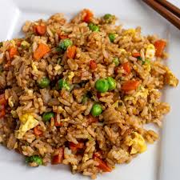
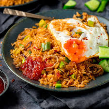
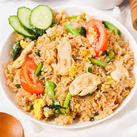
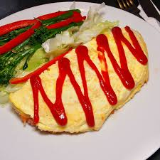
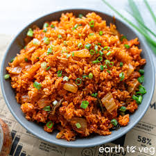
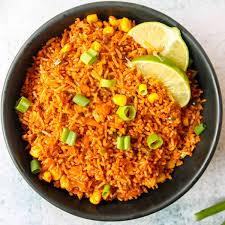

Often made with leftover rice, diced vegetables, scallions, eggs, and proteins like chicken, shrimp, or Chinese BBQ pork (char siu). It is typically seasoned with soy sauce, garlic, and sesame oil.
Rp 27.000

Known as the national dish of Indonesia, this style is highly aromatic, featuring a dark, sweet soy sauce (kecap manis) and shrimp paste. It is often topped with a fried egg, crispy shallots, and a side of satay.
Rp 43.000

Typically prepared with jasmine rice, garlic, onions, and tomatoes, and flavored with fish sauce and lime juice.
Rp 26.000

Chahan is a Japanese take on Chinese fried rice often made with mix-ins like diced chashu, seafood, or takana (pickled mustard greens). Omurice is a distinct Japanese adaptation where ketchup-seasoned chicken fried rice is wrapped in a thin egg omelette.
Rp 67.000

A spicy, tangy, and savory dish made by stir-frying leftover rice with fermented kimchi, gochujang (Korean chili paste), and often spam, bacon, or pork belly. It is frequently topped with a fried egg and sesame seeds.
Rp 45.000

Inspired by traditional paella techniques, this dish is cooked in a wide, shallow pan and utilizes flavorful additions like saffron, chorizo, and seafood.
Rp 35.000